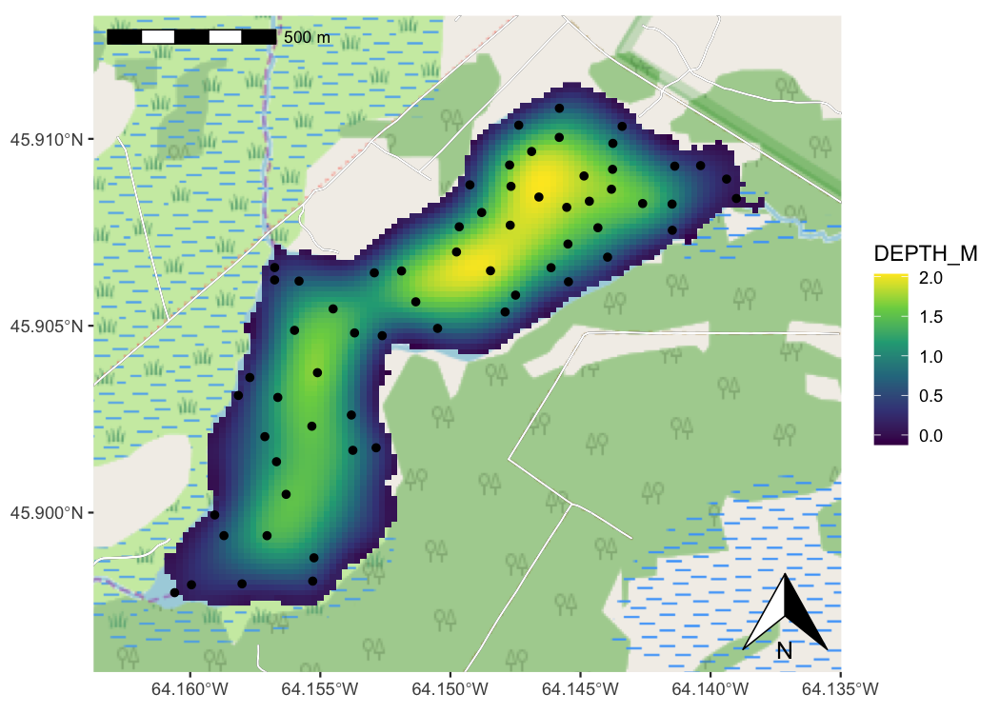

Spatial data plus the power of the ggplot2 framework means easier mapping.
Installation
The package is available on CRAN, and can be installed using install.packages("ggspatial"). The development version can be installed via remotes.
install.packages("ggspatial")Or for the development version:
install.packages("remotes") # if remotes isn't installed
remotes::install_github("paleolimbot/ggspatial")Introduction
This package is a framework for interacting with spatial data using ggplot2 as a plotting backend. The package supports sf package objects, sp package objects, and raster package objects, and uses geom_sf() and coord_sf() to do most of the heavy lifting with respect to coordinate transformation.
library(ggplot2)
library(ggspatial)
load_longlake_data()
ggplot() +
# loads background map tiles from a tile source
annotation_map_tile(zoomin = -1) +
# annotation_spatial() layers don't train the scales, so data stays central
annotation_spatial(longlake_roadsdf, size = 2, col = "black") +
annotation_spatial(longlake_roadsdf, size = 1.6, col = "white") +
# raster layers train scales and get projected automatically
layer_spatial(longlake_depth_raster, aes(colour = stat(band1))) +
# make no data values transparent
scale_fill_viridis_c(na.value = NA) +
# layer_spatial trains the scales
layer_spatial(longlake_depthdf, aes(fill = DEPTH_M)) +
# spatial-aware automagic scale bar
annotation_scale(location = "tl") +
# spatial-aware automagic north arrow
annotation_north_arrow(location = "br", which_north = "true")